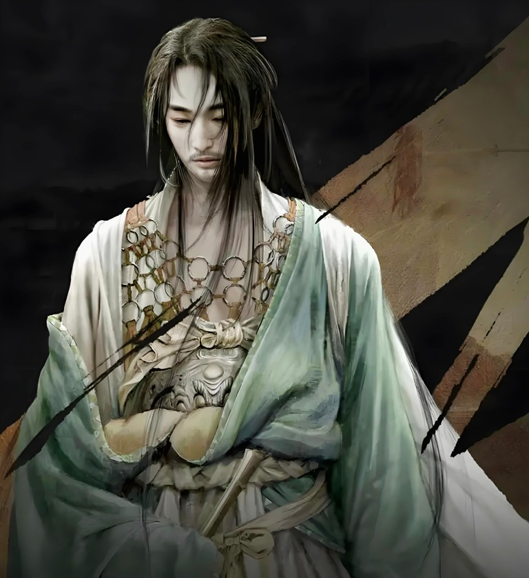

李煜词境 · 南唐旧梦
李煜词境 · 南唐旧梦南唐 · 李煜 · 词中帝王
风月一场梦，江山万里愁。
月色从金陵来。随它走一趟宫阙与囚窗，看他怎样把半生悲欢写进词里；等春水涨满，再把你还给自己。
问君能有几多愁？恰似一江春水向东流。
月下故园
南唐 · 937—978
南唐 · 937—978
小楼昨夜又东风
故国不堪回首月明中
南唐词境
故国不堪回首月明中
滚轮向下 · SCROLL TO WANDER01 / 04
第一折 · 识其人
他来时，金陵的月色正满
01 THE POET

第二折 · 读其词
他把不能说的，都写进了词


第三折 · 拾其句
句子落在水上，等你俯身
戏 A PLAYFUL INTERLUDE
词间一戏，拾字成句。
他的词句散作水面浮字。按原来的次序拾回字笺，便还他一阕完整的春天。
五阕皆圆
字字归位，春水归心
散落千年的句子，被你就着月光，一句一句拾了回来。
第四折 · 听回响
千年之后，仍有人在灯下读他
03 BEYOND HIS TIME
他的朝代早已过去，
他的词还停在此刻。
千年之后，人们仍在纸页、戏台与自己的阅读里重新看见他。走近这些目光，看同一个名字怎样照出万千心境。
第五折 · 留一笔
卷尾留着白，最后一笔归你
松
影
影